Susaki, Kochi: things to do, food and stays
Susaki · Kochi
Susaki
Highlighted on the Kochi map.
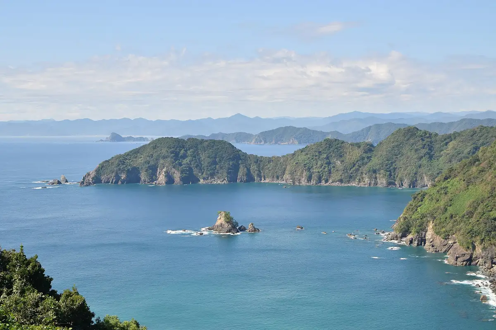
Stay
千年の美湯 そうだ山温泉 和 YAWARAGI
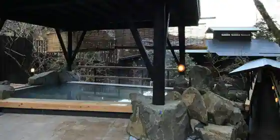
Sennen No Bi Yu Soda Yama Onsen Wa YAWARAGI
Inn at Sodayama Onsen in Kuwatayamaotsu, Susaki with free-flowing hot spring baths.
暮らしのねっこ
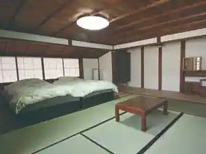
Kurashi Nonekko
Inn in Aoki, Susaki with room-only plans and a renovated traditional house.
Ｈｏｔｅｌバンダガ
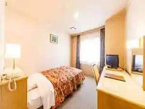
Hotel Bandaga
Inn in Nishizaki, Susaki with parking.
HOTEL AZ 高知須崎店
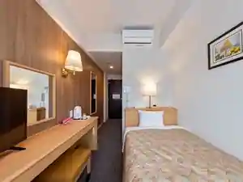
HOTEL AZ Kochi Susaki
Inn in Kanda, Susaki; 3-minute drive from Kochikensusakishi(Susakihigashi IC.
ゲストハウスサンテ｜高知県須崎市の一棟貸し古民家宿
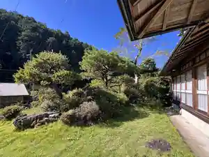
Guesthouse Sante | Kochiken Susaki Shi No Hitomune Kashi Ko Minka Yado
Guesthouse in Wareisatootsu, Susaki with a renovated traditional house.
民宿なずな
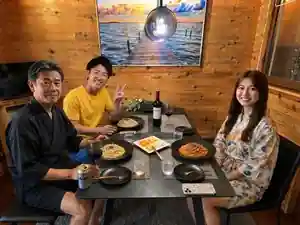
Minshuku Nazuna
Dining
まゆみの店
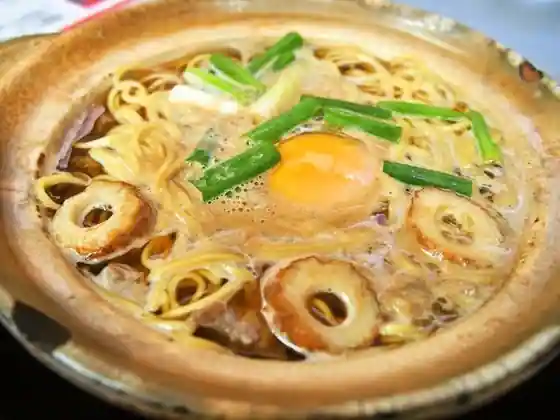
Mayumino
多田水産 須崎道の駅店
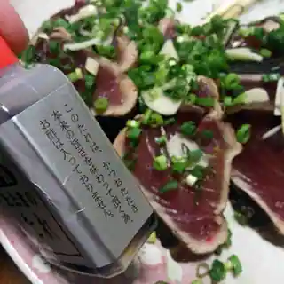
Tada Suisan Susaki Michi No Eki
橋本食堂
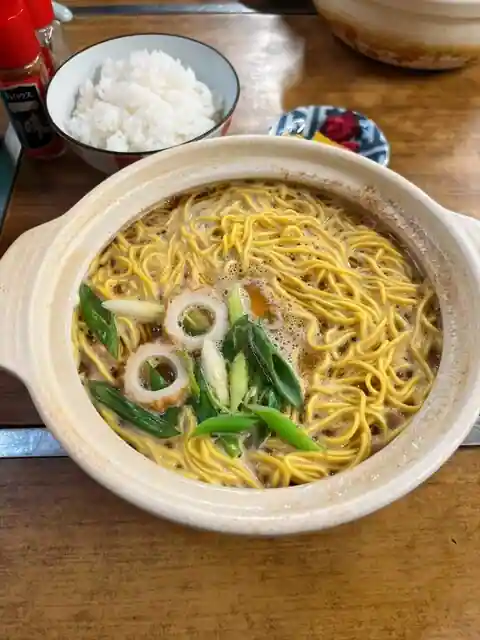
Hashimoto Shokudo
伊勢えび料理池浦
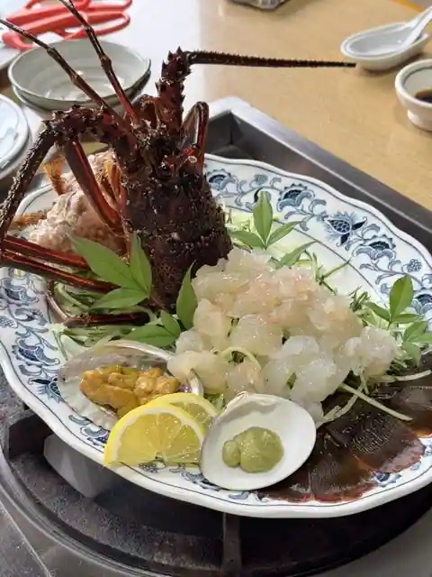
Ise Ebi Ryori Ikeura
喜楽
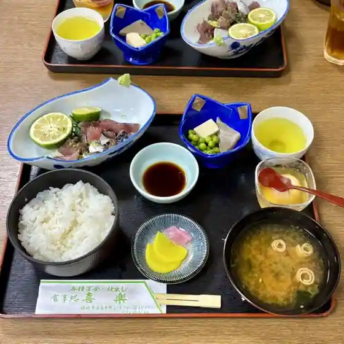
Kiraku
すさき駅前食堂
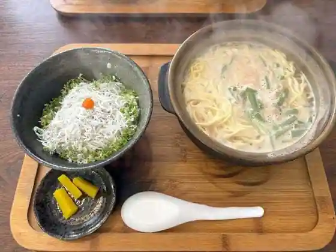
Susaki Ekimae Shokudo
ショップたけざき
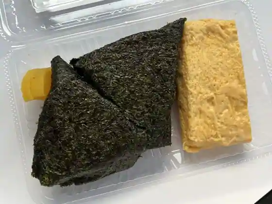
Shoppu Takezaki
須崎魚河岸・魚貴
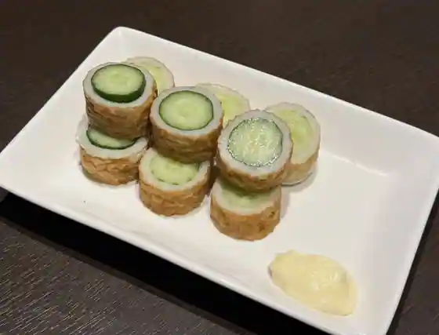
Susaki Uogashi Sakana Takashi
レストラン とれた亭
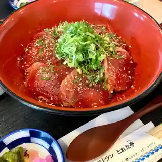
Restaurant Toreta Tei
いせえび料理 中平
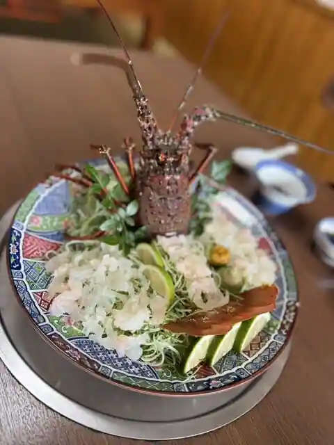
Isebi Ryori Chuhei
道の駅 かわうその里すさき
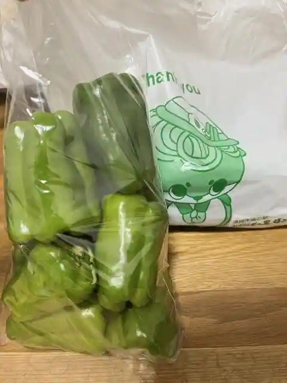
Michi No Eki Kawausono Sato Susaki
喫茶＆お食事処 がろ～
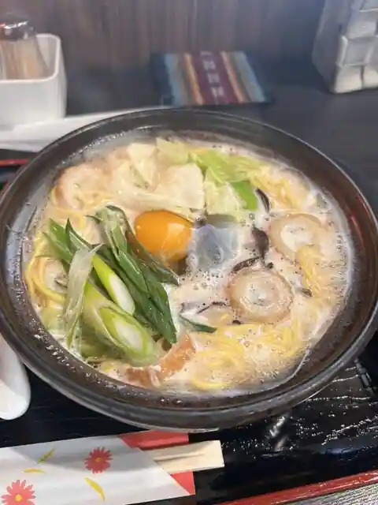
Kissa & O Shokuji Tokoro Garo ~
浮橋
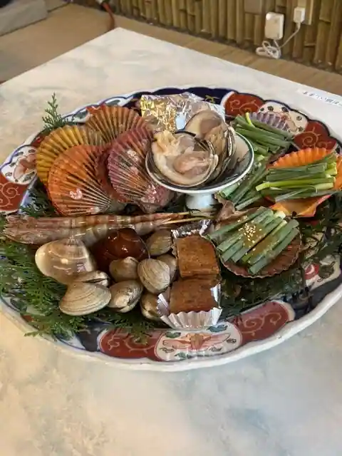
Ukibashi
モンブラン
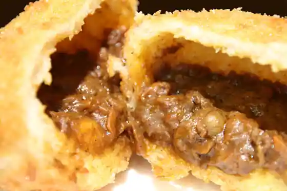
Monburan
だるま
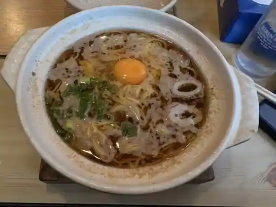
Daruma
そうだ山温泉 和
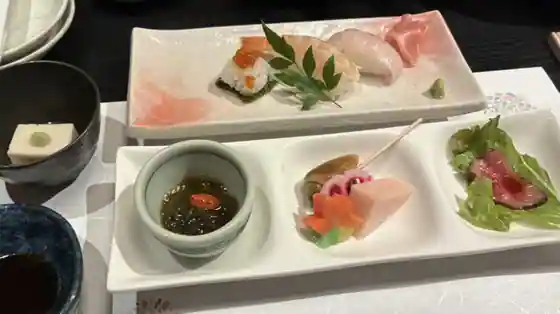
Soda Yama Onsen Wa
居酒屋ばさら
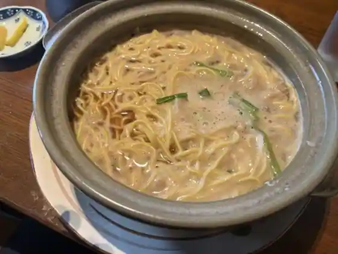
Izakaya Basara
小野家
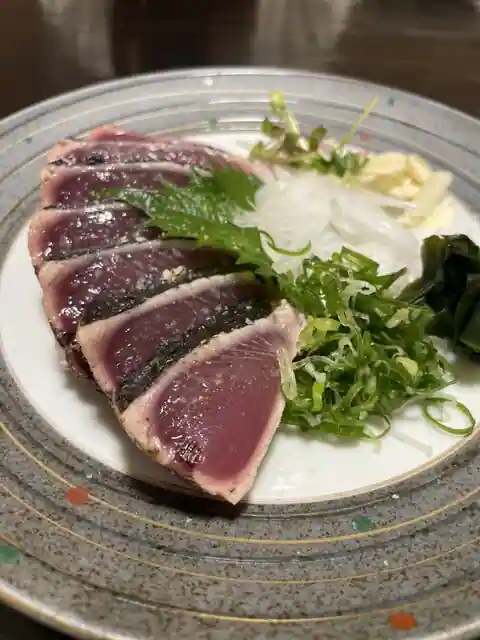
Ono Ie
須﨑のサカナ本舗
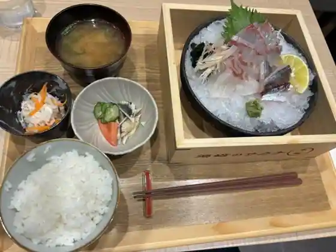
Su Su No Sakana Honpo
千秋
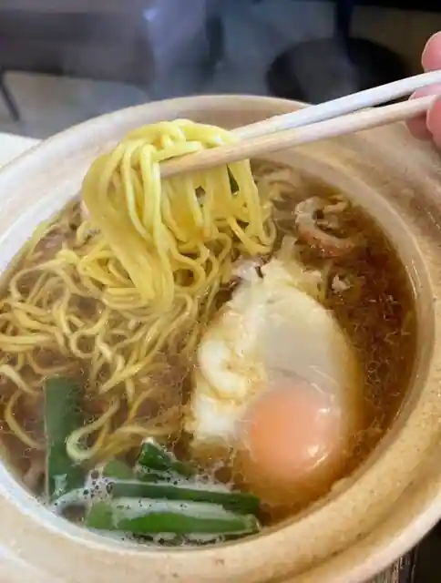
Senshu
回転寿司いちばん船
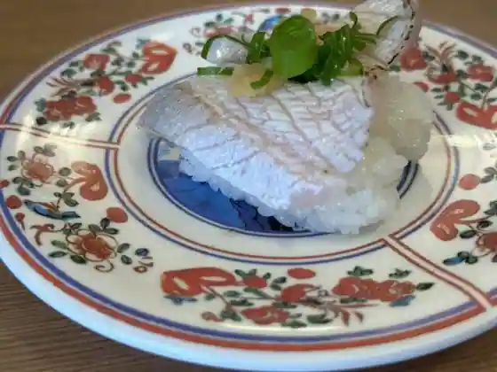
Kaitenzushi Ichiban Fune
須崎大漁堂
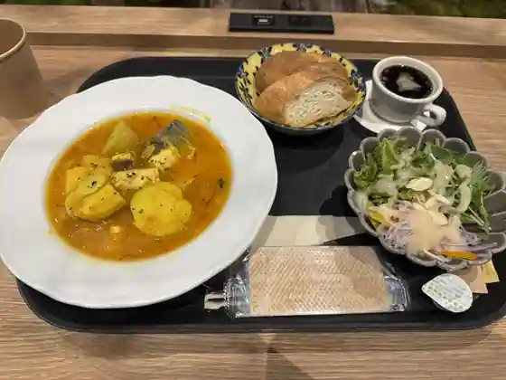
Susaki Tairyo Do
やのよし
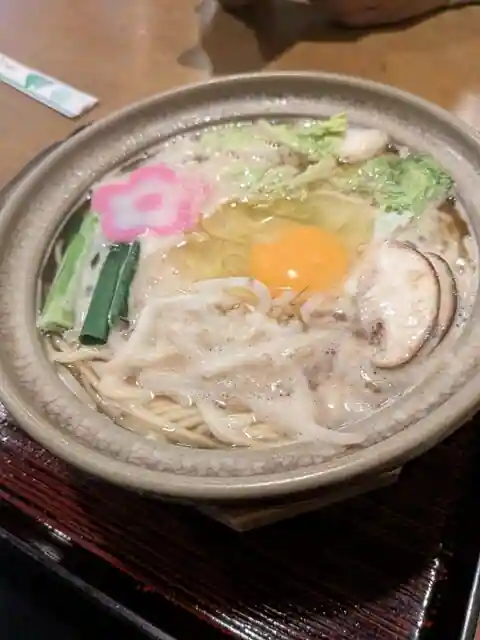
Yanoyoshi
横畠冷菓
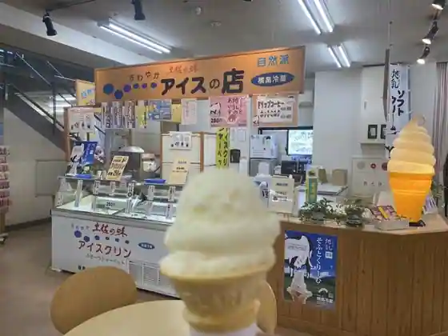
Yokohata Reika
Sights
Yoko Nami Kuroshio Line
Dai Zen Tera
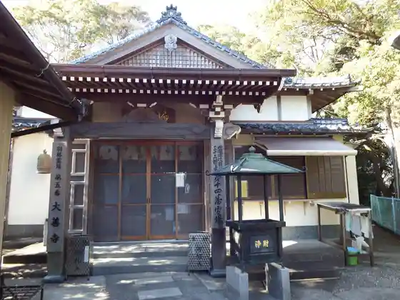
Mei Mu Shrine
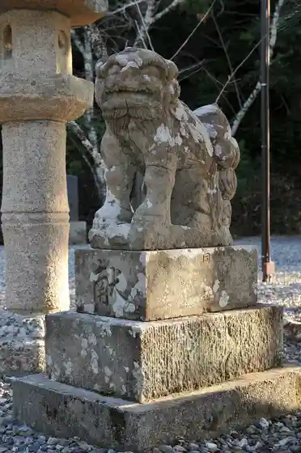
Suga Shrine
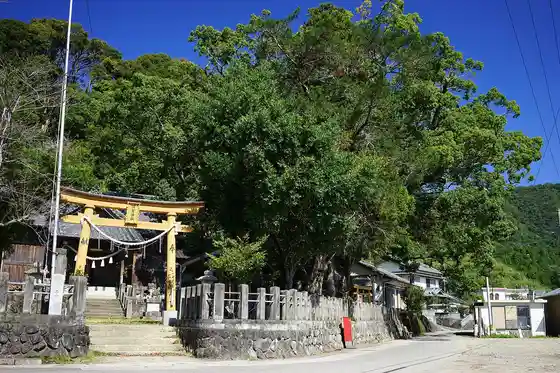
Nomi Wan
Kuwata Sansetsu Wari Sakura